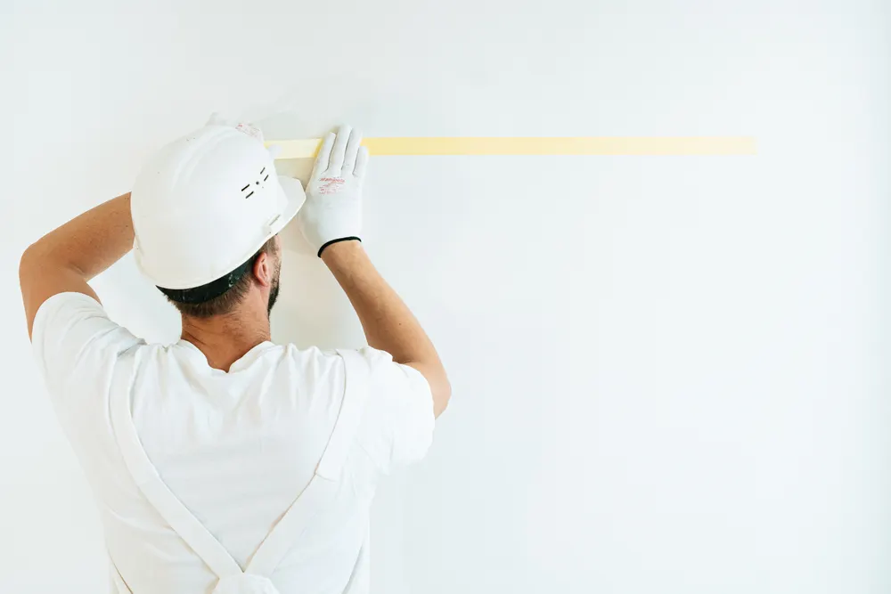
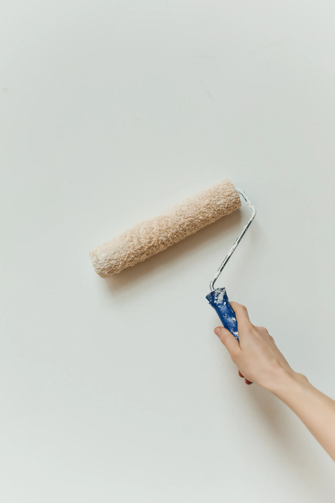
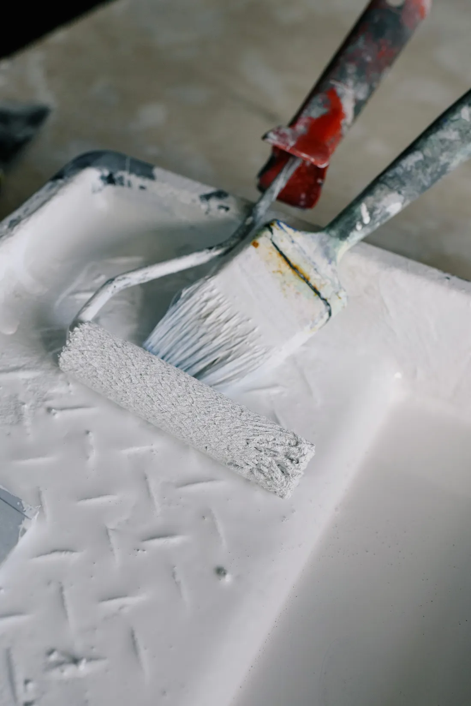
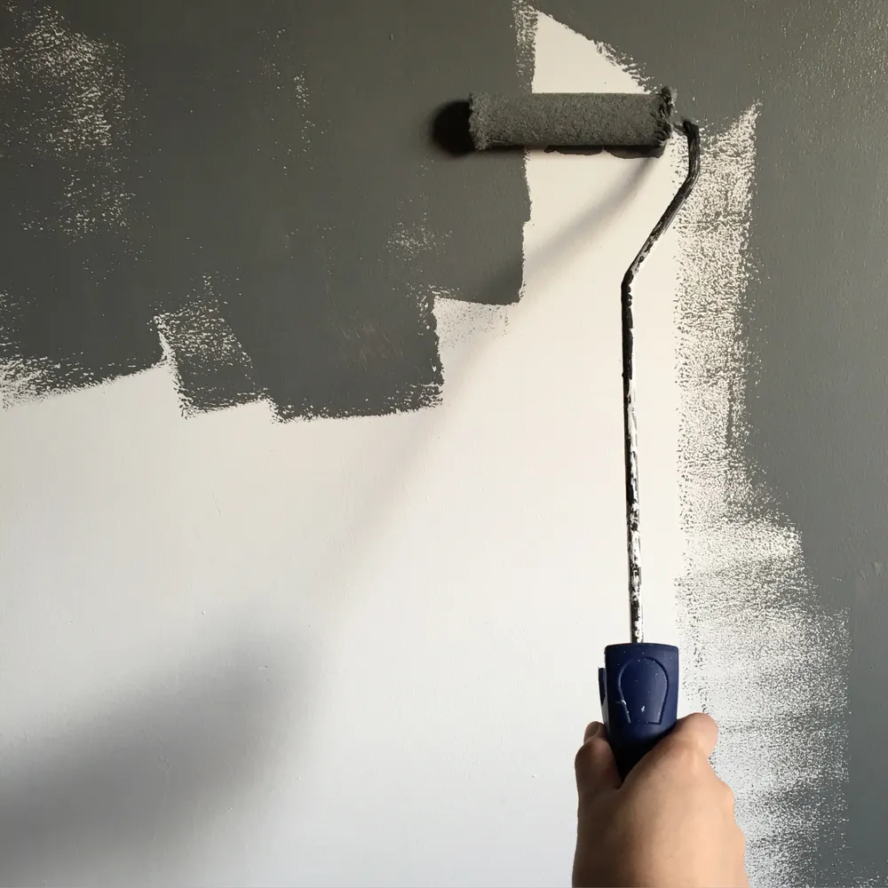
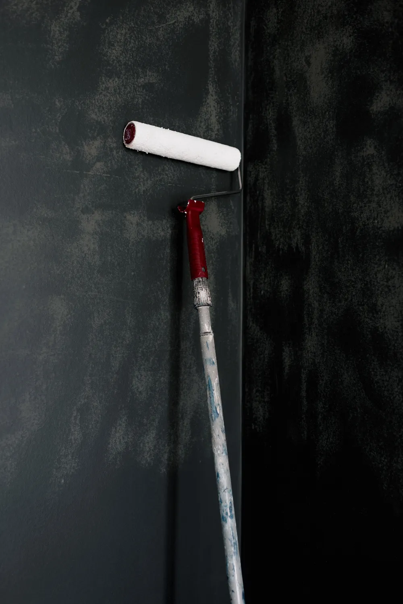
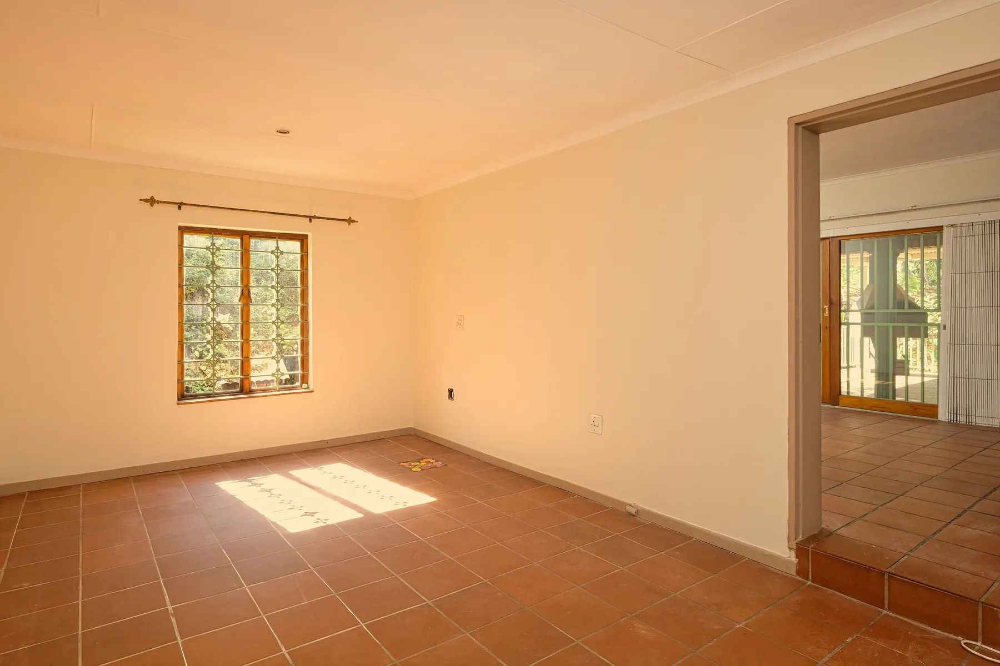
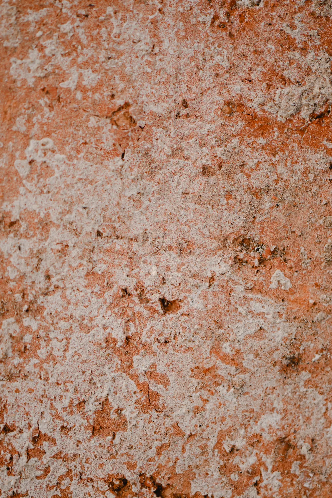
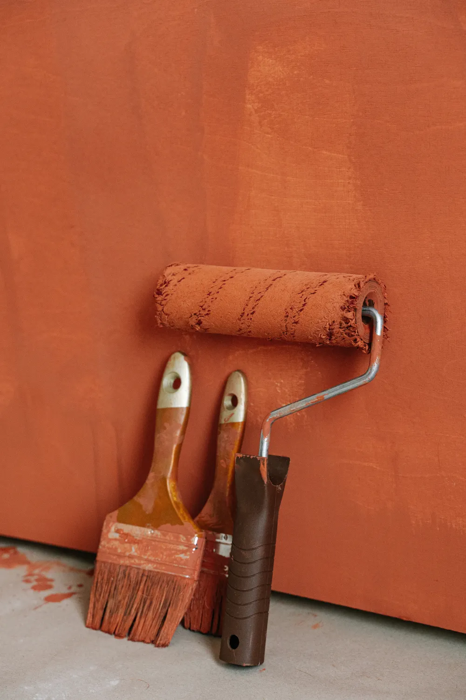

01
PREPARACIÓN

Proteger el entorno y preparar la base: el punto de partida.
PINTURA / ESPACIOS / COLOR
Una nueva mirada empieza aquí.José Luis Gracia Pavón · Pintor.

01 — EL OFICIO

Mucho antes del color,
está el cuidado.
En un trabajo de pintura, cada fase cuenta. Preparar la superficie, aplicar la pintura y cuidar el acabado son pasos que influyen en cómo se ve y se siente un espacio.
La luz sobre una pared. El encuentro entre dos tonos. La continuidad de una superficie. El resultado también está en esos pequeños detalles.
Una mirada al proceso02 — MATERIA Y PROCESO
El oficio, paso a paso.
Proteger el entorno y preparar la base: el punto de partida.

El color toma forma, una pasada tras otra.

Observar la superficie y prestar atención a los encuentros.
Fases habituales de los trabajos de pintura. Imágenes ilustrativas; no describen un método exclusivo de José Luis.
03 — ESPACIOS Y COLOR
Una selección visual de luz,
tonos y superficies.

Hay colores que abrigan.
Otros, que dejan respirar.


Color, materia
y posibilidades.
04 — HABLEMOS
El siguiente paso es una conversación.Contacta con José Luis Gracia Pavón para consultar tus necesidades de pintura.
JOSÉ LUIS GRACIA PAVÓNPINTOR